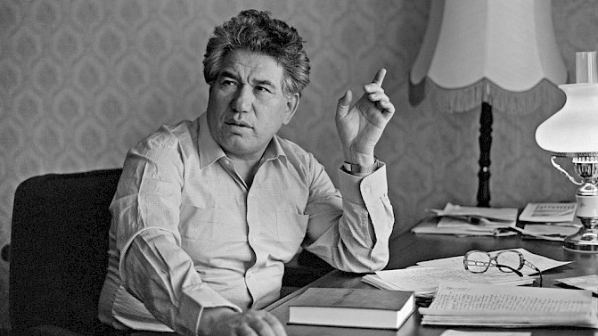
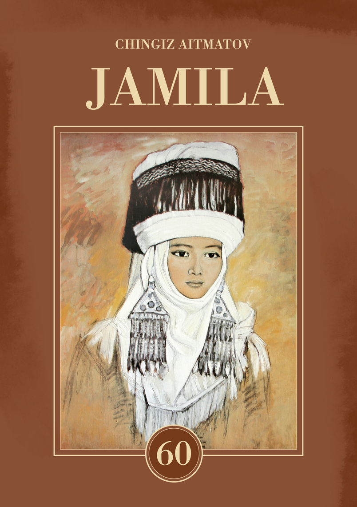
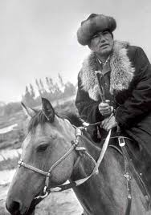
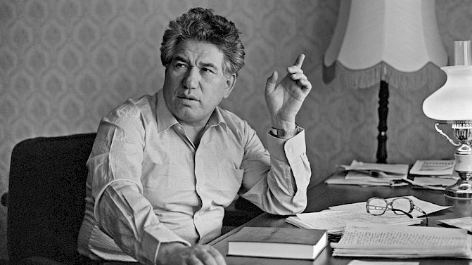
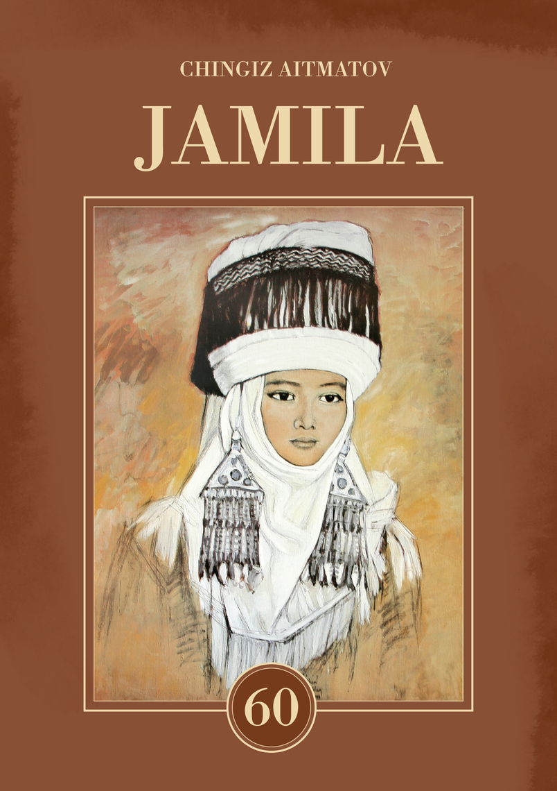
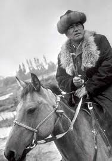

Chinghiz Aitmatov
 





Chinghiz Aitmatov is The Best Known Figure in Kyrgyzstan Literature
There will be winter, there will be cold, there will be snowstorms, but then there will be spring.. Agian..
Even now I often ask myself: perhaps love produces a feeling of inspiration similar to that experienced by an artist or a poet?”
It is a pity the spirit does not grow old too.
But you no longer heard the song. You had gone away, my boy, into your tale. Did you know that you would never turn into a fish, that you would never reach Issyk-Kul, or see the white ship, or say to it: "Hello, white ship, it's I"? You swam away.
I was astounded at the passion and fire of the melody itself. I could not describe it then, nor can I now. Was it just his voice or something more tangible emerging from his very soul that could arouse such emotion in another person, and bring one's innermost thoughts to life?
I was astounded at the passion and fire of the melody itself. I could not describe it then, nor can I now. Was it just his voice or something more tangible emerging from his very soul that could arouse such emotion in another person, and bring one’s innermost thoughts to life?
Nothing but water -- an ever-moving swell; nothing but waves, swiftly forming and instantly dying; nothing but depths; dark, fathomless depths; and nothing but sky, scudding white clouds, puffy and intangible. This was the living world, nothing besides, nothing else but sea. No winter or summer, no hills or ravines.
Fainting with heat, he suddenly found himself in the cold, cold river. He had turned into a fish. Tail, body, fins – everything was fishlike, except the head, which was his own and still ached. He swam through the muted, cool, underwater darkness and thought that now he would remain a fish forever and never go back to the moutains. “I won’t return,” he said to himself. “It’s better to be a fish, it’s better to be a fish..